library("QFeatures")
library("dplyr")
library("tidyr")
library("ggplot2")
library("msqrob2")
library("stringr")
library("ExploreModelMatrix")
library("MsCoreUtils")
library("matrixStats")
library("patchwork")
library("kableExtra")
library("ComplexHeatmap")
library("purrr")
library("tibble")
library("scater")Normalisation wrapup - Mouse Diet
Lieven Clement ![]()
1 Background
With the PXD059421 data deposited on ProteomeXchange researchers study the molecular effects of dietary DINCH exposure, on the proteome, phosphoproteome and acetylome profiles of visceral (VIS) and subcutaneous (SC) adipose tissue in a model of diet-induced obesity in male and female C57BL/6N mice. This study includes data on visceral and subcutaneous adipose tissue of female and male mice that were either fed a standard plant-based diet (chow), a standard high-fat diet (HFD) or two HFD diets including doses of DINCH (4,500 ppm and 15,000 ppm). Three female and three male mice were used for each diet (Aldehoff et al. 2025).
The data were downloaded from Pride and reprocessed using spectronaut. Here, we will focus on the data from the proteome MS runs.
2 Load packages
We load the msqrob2 package, along with additional packages for data manipulation and visualisation.
3 Data
3.1 Precursor table
We load the output from Spectronaut parquet file. Can be file path to local file or url to file that lives on the web.
#precursorFile = "https://github.com/statOmics/PDA-DIA/raw/refs/heads/main/data/mouseDiet-spectronaut.parquet"
precursorFile = "data/mouseDiet-spectronaut.parquet"We can import the report.parquet file using the read_parquet function from the arrow package.
precursors <- arrow::read_parquet(precursorFile) # function from the arrow package
#precursors <- data.table::fread(precursorFile) # For older versions the results are stored as tsv files. Note, that by default the spectronaut output is stored as a tsv file. In that case a . occurs in the column variables instead of a “_” upon importing with fread.
Each row in the precursor data table is in “long format” and contains information about one precursor in a specific run (the table below shows the first 6 rows). The columns contains various descriptors about the precursor, such as its sequence, its charge, run, etc.
| R_FileName | EG_ModifiedSequence | PEP_StrippedSequence | FG_Charge | PG_ProteinGroups | PG_Genes | FG_MS2RawQuantity | FG_Quantity | EG_Qvalue | PG_Qvalue | PEP_IsProteotypic | EG_IsDecoy | EG_ApexRT | EG_IsImputed |
|---|---|---|---|---|---|---|---|---|---|---|---|---|---|
| 153_SC_FP_fHFD_1 | VLIPSYAAGSIIGK | VLIPSYAAGSIIGK | 2 | A0A1W2P872 | Nova2 | 4878.254 | 6511.023 | 0.0000000 | 0 | FALSE | FALSE | 47.14784 | FALSE |
| 153_SC_FP_fHFD_1 | TLQSLAC[Carbamidomethyl (C)]GK | TLQSLACGK | 2 | A2A432 | Cul4b | 6054.375 | 9646.727 | 0.0000006 | 0 | FALSE | FALSE | 23.00650 | FALSE |
| 153_SC_FP_fHFD_1 | DAFLVFR | DAFLVFR | 2 | A2A5R2 | Arfgef2 | 1600.934 | 2196.849 | 0.0022513 | 0 | FALSE | FALSE | 47.74006 | FALSE |
| 153_SC_FP_fHFD_1 | MLLIENLR | MLLIENLR | 2 | A2A863 | Itgb4 | 9364.659 | 12041.207 | 0.0000000 | 0 | TRUE | FALSE | 45.63564 | FALSE |
| 153_SC_FP_fHFD_1 | SQVSPQGLQVR | SQVSPQGLQVR | 2 | A2A863 | Itgb4 | 16982.832 | 27112.275 | 0.0007975 | 0 | TRUE | FALSE | 24.47148 | FALSE |
| 153_SC_FP_fHFD_1 | VLSTSSTLTR | VLSTSSTLTR | 2 | A2A863 | Itgb4 | 8142.862 | 12632.530 | 0.0012142 | 0 | TRUE | FALSE | 21.72404 | FALSE |
(Note, that by default the spectronaut output is stored as a tsv file. In that case a . occurs in the column variables instead of a “_” upon importing with fread.)
No precursor Id and norm factors are present in the file. We can make the former using the EG_ModifiedSequence and FG_Charge, and the latter using FG_MS2RawQuantity and FG_Quantity.
precursors <- precursors |>
mutate(EG_PrecursorId = paste0(EG_ModifiedSequence, FG_Charge),
EG_NormalizationFactor = FG_Quantity/FG_MS2RawQuantity, #Normalisation.Factor
)precursors <- precursors |>
select(
R_FileName, #Run,
EG_PrecursorId,
EG_ModifiedSequence, #Modified.Sequence,
PEP_StrippedSequence, #Stripped.Sequence,
FG_Charge, #PrecursoR_Charge,
PG_ProteinGroups, #Protein.Group,
PG_Genes, #Genes,
FG_MS2RawQuantity, #PrecursoR_Quantity,
FG_Quantity,
EG_NormalizationFactor,
EG_Qvalue, #Q.Value,
#No spectronaut counterpart #Lib.Q.Value,
PG_Qvalue, # PG_Q.Value,
#No spectronaut counterpart #Lib.PG_Q.Value
PEP_IsProteotypic, #Proteotypic,
EG_IsDecoy, #Decoy,
EG_ApexRT,#RT
EG_IsImputed)Quick check on distribution of precursors MS2 intensities.
precursors |>
ggplot(aes(x = log2(FG_MS2RawQuantity))) +
geom_density() +
theme_minimal()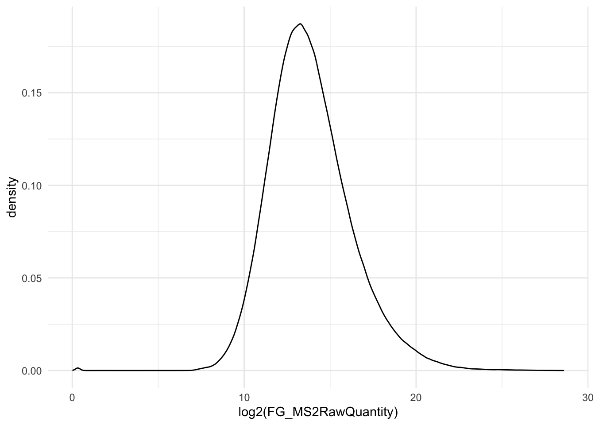
Seems no imputation has been done.
3.2 Sample annotation table
The sample annotation table) is not available and can be generated from the run labels, as the researchers included information on the design in the filenames.
annot <- precursors |>
dplyr::distinct(R_FileName) |>
separate(R_FileName, into = c('f1','tissue','f2','diet','rep'), sep = '_', remove=FALSE) |>
mutate(runCol=R_FileName,
sex = stringr::str_sub(diet,1,1),
diet = stringr::str_sub(diet,2),
rep = paste(diet, sex, rep, sep='_'),
sampleGroup = paste(tissue,diet,sex,sep='_'),
sampleId = paste(tissue,rep, sep="_")) |>
dplyr::select(-c(R_FileName,f1,f2)) |>
relocate("runCol")
annot runCol tissue diet rep sex sampleGroup sampleId
1 153_SC_FP_fHFD_1 SC HFD HFD_f_1 f SC_HFD_f SC_HFD_f_1
2 153_SC_FP_fHFD_2 SC HFD HFD_f_2 f SC_HFD_f SC_HFD_f_2
3 153_SC_FP_fHFD_3 SC HFD HFD_f_3 f SC_HFD_f SC_HFD_f_3
4 153_SC_FP_fchow_1 SC chow chow_f_1 f SC_chow_f SC_chow_f_1
5 153_SC_FP_fchow_2 SC chow chow_f_2 f SC_chow_f SC_chow_f_2
6 153_SC_FP_fchow_3 SC chow chow_f_3 f SC_chow_f SC_chow_f_3
7 153_SC_FP_fhigh_1 SC high high_f_1 f SC_high_f SC_high_f_1
8 153_SC_FP_fhigh_2 SC high high_f_2 f SC_high_f SC_high_f_2
9 153_SC_FP_fhigh_3 SC high high_f_3 f SC_high_f SC_high_f_3
10 153_SC_FP_flow_1 SC low low_f_1 f SC_low_f SC_low_f_1
11 153_SC_FP_flow_2 SC low low_f_2 f SC_low_f SC_low_f_2
12 153_SC_FP_flow_3 SC low low_f_3 f SC_low_f SC_low_f_3
13 153_SC_FP_mHFD_1 SC HFD HFD_m_1 m SC_HFD_m SC_HFD_m_1
14 153_SC_FP_mHFD_2 SC HFD HFD_m_2 m SC_HFD_m SC_HFD_m_2
15 153_SC_FP_mHFD_3 SC HFD HFD_m_3 m SC_HFD_m SC_HFD_m_3
16 153_SC_FP_mchow_1 SC chow chow_m_1 m SC_chow_m SC_chow_m_1
17 153_SC_FP_mchow_2 SC chow chow_m_2 m SC_chow_m SC_chow_m_2
18 153_SC_FP_mchow_3 SC chow chow_m_3 m SC_chow_m SC_chow_m_3
19 153_SC_FP_mhigh_1 SC high high_m_1 m SC_high_m SC_high_m_1
20 153_SC_FP_mhigh_2 SC high high_m_2 m SC_high_m SC_high_m_2
21 153_SC_FP_mhigh_3 SC high high_m_3 m SC_high_m SC_high_m_3
22 153_SC_FP_mlow_1 SC low low_m_1 m SC_low_m SC_low_m_1
23 153_SC_FP_mlow_2 SC low low_m_2 m SC_low_m SC_low_m_2
24 153_SC_FP_mlow_3 SC low low_m_3 m SC_low_m SC_low_m_3
25 153_VIS_FP_fHFD_1 VIS HFD HFD_f_1 f VIS_HFD_f VIS_HFD_f_1
26 153_VIS_FP_fHFD_2 VIS HFD HFD_f_2 f VIS_HFD_f VIS_HFD_f_2
27 153_VIS_FP_fHFD_3 VIS HFD HFD_f_3 f VIS_HFD_f VIS_HFD_f_3
28 153_VIS_FP_fchow_1 VIS chow chow_f_1 f VIS_chow_f VIS_chow_f_1
29 153_VIS_FP_fchow_2 VIS chow chow_f_2 f VIS_chow_f VIS_chow_f_2
30 153_VIS_FP_fchow_3 VIS chow chow_f_3 f VIS_chow_f VIS_chow_f_3
31 153_VIS_FP_fhigh_1 VIS high high_f_1 f VIS_high_f VIS_high_f_1
32 153_VIS_FP_fhigh_2 VIS high high_f_2 f VIS_high_f VIS_high_f_2
33 153_VIS_FP_fhigh_3 VIS high high_f_3 f VIS_high_f VIS_high_f_3
34 153_VIS_FP_flow_1 VIS low low_f_1 f VIS_low_f VIS_low_f_1
35 153_VIS_FP_flow_2 VIS low low_f_2 f VIS_low_f VIS_low_f_2
36 153_VIS_FP_flow_3 VIS low low_f_3 f VIS_low_f VIS_low_f_3
37 153_VIS_FP_mHFD_1 VIS HFD HFD_m_1 m VIS_HFD_m VIS_HFD_m_1
38 153_VIS_FP_mHFD_2 VIS HFD HFD_m_2 m VIS_HFD_m VIS_HFD_m_2
39 153_VIS_FP_mHFD_3 VIS HFD HFD_m_3 m VIS_HFD_m VIS_HFD_m_3
40 153_VIS_FP_mchow_1 VIS chow chow_m_1 m VIS_chow_m VIS_chow_m_1
41 153_VIS_FP_mchow_2 VIS chow chow_m_2 m VIS_chow_m VIS_chow_m_2
42 153_VIS_FP_mchow_3 VIS chow chow_m_3 m VIS_chow_m VIS_chow_m_3
43 153_VIS_FP_mhigh_1 VIS high high_m_1 m VIS_high_m VIS_high_m_1
44 153_VIS_FP_mhigh_2 VIS high high_m_2 m VIS_high_m VIS_high_m_2
45 153_VIS_FP_mhigh_3 VIS high high_m_3 m VIS_high_m VIS_high_m_3
46 153_VIS_FP_mlow_1 VIS low low_m_1 m VIS_low_m VIS_low_m_1
47 153_VIS_FP_mlow_2 VIS low low_m_2 m VIS_low_m VIS_low_m_2
48 153_VIS_FP_mlow_3 VIS low low_m_3 m VIS_low_m VIS_low_m_33.3 Convert to QFeatures
First, recall that the precursor table is file in long format. Every quantitative column in the precursor table contains information for multiple runs. Therefore, the function split the table based on the run identifier, given by the runCol argument (for Spectronaut, that identifier is contained in run). So, the QFeatures object after import will contain as many sets as there are runs. Next, the function links the annotation table with the PSM data. To achieve this, the annotation table must contain a runCol column that provides the run identifier in which each sample has been acquired, and this information will be used to match the identifiers in the Run column of the precursor table.
Here, we will use the FG_MS2Quantity column as quantification input.
Note, that we filter a number of variables to reduce the footprint of the QFeatures object.
(qf <- readQFeatures(assayData = precursors,
colData = annot,
quantCols = "FG_MS2RawQuantity",
runCol = "R_FileName",
fnames = "EG_PrecursorId"))An instance of class QFeatures (type: bulk) with 48 sets:
[1] 153_SC_FP_fchow_1: SummarizedExperiment with 44520 rows and 1 columns
[2] 153_SC_FP_fchow_2: SummarizedExperiment with 25148 rows and 1 columns
[3] 153_SC_FP_fchow_3: SummarizedExperiment with 32891 rows and 1 columns
...
[46] 153_VIS_FP_mlow_1: SummarizedExperiment with 55773 rows and 1 columns
[47] 153_VIS_FP_mlow_2: SummarizedExperiment with 56615 rows and 1 columns
[48] 153_VIS_FP_mlow_3: SummarizedExperiment with 53431 rows and 1 columns 4 Data preprocessing
The data preprocessing workflow for DIA data is similar to the workflow for DDA-LFQ data, but there are suble differences as we start from precursor level data and have additional columns.
4.1 Encoding missing values
We first replace any zero in the quantitative data with an NA.
qf <- zeroIsNA(qf, names(qf))Note that msqrob2 can handle missing data without having to rely on hard-to-verify imputation assumptions, which is our general recommendation. However, msqrob2 does not prevent users from using imputation, which can be performed with impute() from the QFeatures package.
4.2 Precursor Filtering
Filtering removes low-quality and unreliable precursors that would otherwise introduce noise and artefacts in the data.
4.2.1 Remove questionable identifications
We apply standard filtering:
q-value threshold of 0.01 for the identification of precursors (
EG_Qvalue) and protein groups (PG_Qvalue).Remove precursors that could not be mapped, i.e. when
EG_PrecursorIdcolumn is an empty string.Filter decoys, i.e. only keep precursors for which the
EG_IsDecoycolumn equals 0.Keeping only proteotypic peptides, which map uniquely to a specific protein.
Only keep non-imputed intensities:
EG_IsImputedequals 0.
qf <- qf |>
filterFeatures(~ EG_Qvalue <= 0.01 & #1.
PG_Qvalue <= 0.01 & #1.
# Lib.Q.Value <= 0.01 & #1.
# Lib.PG_Q.Value <= 0.01 & #1.
EG_PrecursorId != "" & #2.
EG_IsDecoy == 0 & #3.
PEP_IsProteotypic == 1 & #4
EG_IsImputed == 0) #5 Note, that it is important that the filtering criteria are not distorting the distribution of the test statistics in the downstream analysis for features that are non-DA. It can be shown that filtering will not induce bias results when the filtering criterion is independent of test statistic. The criteria that we proposed above are all based on the results of the identification step, hence, they are independent of the downstream test statistics that will be used to prioritize DA proteins.
4.2.2 Assay joining
Up to now, the data from different runs were kept in separate assays. We can now join the normalised sets into an precursor set using joinAssays(). Sets are joined by stacking the columns (samples) in a matrix and rows (features) are matched according to a row identifier, here the EG_PrecursorId. We will store the result in the assay with name: precursor.
(qf <- joinAssays(
x = qf,
i = names(qf),
fcol = "EG_PrecursorId",
name = "precursors"
))An instance of class QFeatures (type: bulk) with 49 sets:
[1] 153_SC_FP_fchow_1: SummarizedExperiment with 41333 rows and 1 columns
[2] 153_SC_FP_fchow_2: SummarizedExperiment with 23168 rows and 1 columns
[3] 153_SC_FP_fchow_3: SummarizedExperiment with 30416 rows and 1 columns
...
[47] 153_VIS_FP_mlow_2: SummarizedExperiment with 52962 rows and 1 columns
[48] 153_VIS_FP_mlow_3: SummarizedExperiment with 49942 rows and 1 columns
[49] precursors: SummarizedExperiment with 70563 rows and 48 columns 4.2.3 Filtering: Remove highly missing precursors
We keep peptides that were observed at last 6 times out of the \(n = 48\) samples, so that we can estimate the peptide characteristics.
nObs <- 6
n <- ncol(qf[["precursors"]])
(qf <- filterNA(qf, i = "precursors", pNA = (n - nObs) / n))An instance of class QFeatures (type: bulk) with 49 sets:
[1] 153_SC_FP_fchow_1: SummarizedExperiment with 41333 rows and 1 columns
[2] 153_SC_FP_fchow_2: SummarizedExperiment with 23168 rows and 1 columns
[3] 153_SC_FP_fchow_3: SummarizedExperiment with 30416 rows and 1 columns
...
[47] 153_VIS_FP_mlow_2: SummarizedExperiment with 52962 rows and 1 columns
[48] 153_VIS_FP_mlow_3: SummarizedExperiment with 49942 rows and 1 columns
[49] precursors: SummarizedExperiment with 65911 rows and 48 columns 4.2.4 Filter one-hit wonders
Here, we remove proteins that can only be found by one peptide, as such proteins may not be trustworthy.
We first calculate how many distinct peptides map to each protein group (
PG_ProteinGroups). We use the stripped precursor sequence, i.e. sequence of the base peptide for this purpose.We store this information in the row data of the precursors assay
We filter precursors of one-hit wonder proteins.
# Filter for peptides per protein
pepsPerProtDf <- qf[["precursors"]] |>
rowData() |>
data.frame() |>
dplyr::select("PEP_StrippedSequence", "PG_ProteinGroups") |>
group_by(PG_ProteinGroups) |>
mutate(pepsPerProt = PEP_StrippedSequence |>
unique() |> length()
) #1.
rowData(qf[["precursors"]])$pepsPerProt <- pepsPerProtDf$pepsPerProt #2.
qf <- filterFeatures(qf,
~ pepsPerProt > 1,
keep = TRUE) #3.4.3 Log-transformation
We perform log2-transformation with logTransform() from the QFeatures package. We use base = 2 and store the result in a new summarized experiment named precursors_log
qf <- logTransform(qf,
base = 2,
i = "precursors",
name = "precursors_log")4.4 Normalisation
The most common objective of MS-based proteomics experiments is to understand the biological changes in protein abundance between experimental conditions. However, changes in measurements between groups can be caused due to technical factors. For instance, there are systematic fluctuations from run-to-run that shift the measured intensity distribution. We can this explore as follows:
- We extract the sets containing the log transformed data. This is performed using
QFeatures’ 3-way subsetting. - We use
longForm()to convert theQFeaturesobject into a long table, includingconditionandconcentrationfor filtering and colouring. - We visualise the density of the quantitative values within each sample. We colour each sample based on its spike-in condition.
qf[, , "precursors_log"] |> #1.
longForm(colvars = colnames(colData(qf))) |> #2.
data.frame() |>
filter(!is.na(value)) |>
ggplot() + #3.
aes(x = value,
colour = sampleGroup,
group = colname) +
geom_density() +
theme_minimal()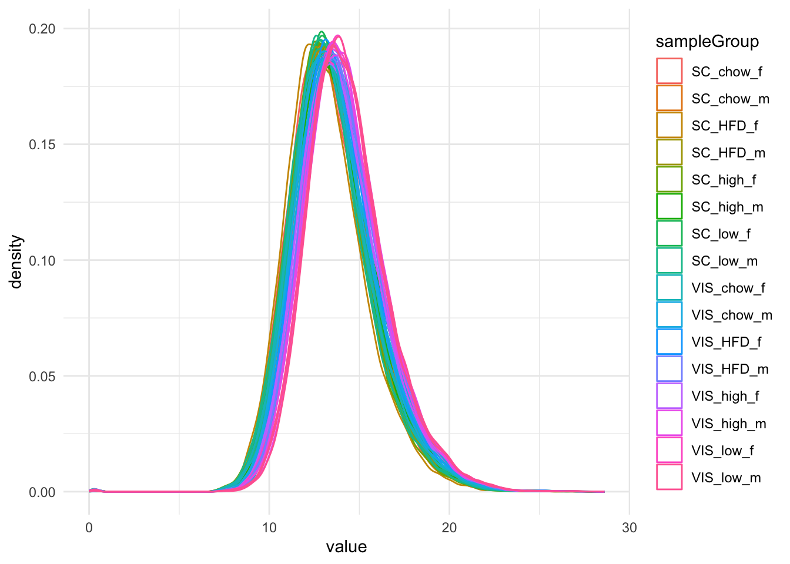
Conventional median normalisation
qf <- sweep( #4. Subtract log2 norm factor column-by-column (MARGIN = 2)
qf,
MARGIN = 2,
STATS = nf_log_med(qf,"precursors_log"),
i = "precursors_log",
name = "precursors_norm"
)We explore the effect of the global normalisation in the subsequent plot.
Formally, the function applies the following operation on each sample \(i\) across all precursors \(p\):
\[ y_{ip}^{\text{norm}} = y_{ip} - \log_2(nf_i) \]
with \(y_ip\) the log2-transformed intensities and \(nf_i\) the log2-transformed norm factor. Upon normalisation, we can see that the distribution of the \(y_{ip}^{\text{norm}}\) nicely overlap (using the same code as above)
qf[, , "precursors_norm"] |>
longForm(colvars = colnames(colData(qf))) |>
data.frame() |>
filter(!is.na(value)) |>
ggplot() +
aes(x = value,
colour = sampleGroup,
group = colname) +
geom_density() +
labs(subtitle = "Median normalisation") +
theme_minimal()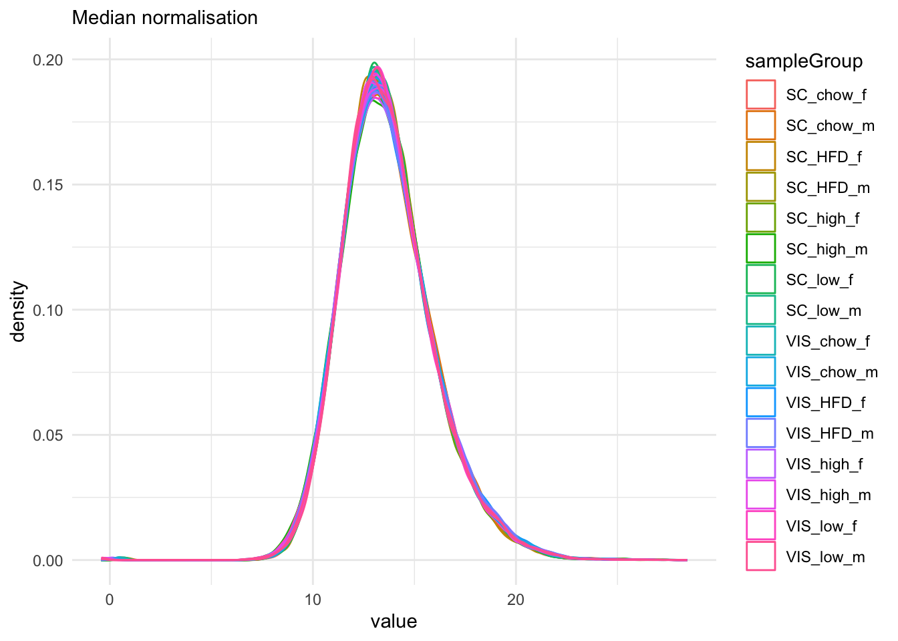
4.5 Summarisation
Here, we summarise the precursor-level data into protein intensities using maxLFQ. maxLFQ first calculates all pairwise log ratio’s between samples only using their shared precursors. Particularly, it uses the median of the log ratio’s between the shared precursors s, i.e. \[r_{ij} = median(y_{sj}-y_{si})\].
Hence, it first eliminates peptide effects. It then estimates the summaries by solving
\[
\sum_i\sum_j(y^{prot}_j - y^{prot}_i - r_ij)^2
\] It is implemented in the maxLFQ function of the iq package.
aggregateFeatures() streamlines summarisation. It requires the name of a rowData column to group the precursors into proteins (or protein groups), here PG_ProteinGroups. We provide the summarisation approach through the fun argument. Other summarisation methods are available from the MsCoreUtils package, see ?aggregateFeatures for a comprehensive list. The function will return a QFeatures object with a new set that we called proteins.
(qf <- aggregateFeatures(
qf, i = "precursors_norm",
name = "proteins",
fcol = "PG_ProteinGroups",
fun = function(X) iq::maxLFQ(X)$estimate
))An instance of class QFeatures (type: bulk) with 52 sets:
[1] 153_SC_FP_fchow_1: SummarizedExperiment with 41333 rows and 1 columns
[2] 153_SC_FP_fchow_2: SummarizedExperiment with 23168 rows and 1 columns
[3] 153_SC_FP_fchow_3: SummarizedExperiment with 30416 rows and 1 columns
...
[50] precursors_log: SummarizedExperiment with 65210 rows and 48 columns
[51] precursors_norm: SummarizedExperiment with 65210 rows and 48 columns
[52] proteins: SummarizedExperiment with 4182 rows and 48 columns 5 Data exploration and QC
Data exploration aims to highlight the main sources of variation in the data prior to data modelling and can pinpoint to outlying or off-behaving samples.
5.1 Marginal distribution at precursor and protein level
precursorDens <- qf[, , "precursors_norm"] |>
longForm(colvars = colnames(colData(qf))) |>
data.frame() |>
filter(!is.na(value)) |>
ggplot() +
aes(x = value,
colour = sampleGroup,
group = colname) +
geom_density() +
theme_minimal() +
labs(subtitle = "Median normalised log2 precursor intensities")
precursorDens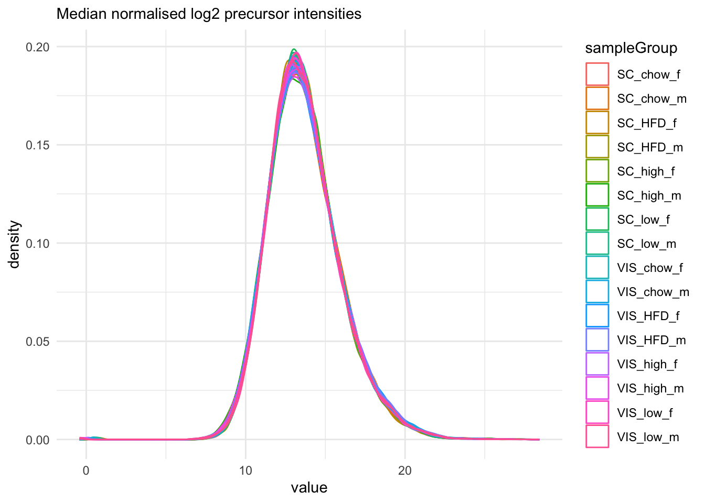
qf[, , "precursors_norm"] |>
longForm(colvars = colnames(colData(qf))) |>
data.frame() |>
filter(!is.na(value)) |>
ggplot() +
aes(x = sampleId,
y = value,
colour = sampleGroup,
group = colname) +
xlab("sample") +
geom_boxplot() +
theme_minimal() +
labs(subtitle = "Median normalised log2 precursor intensities")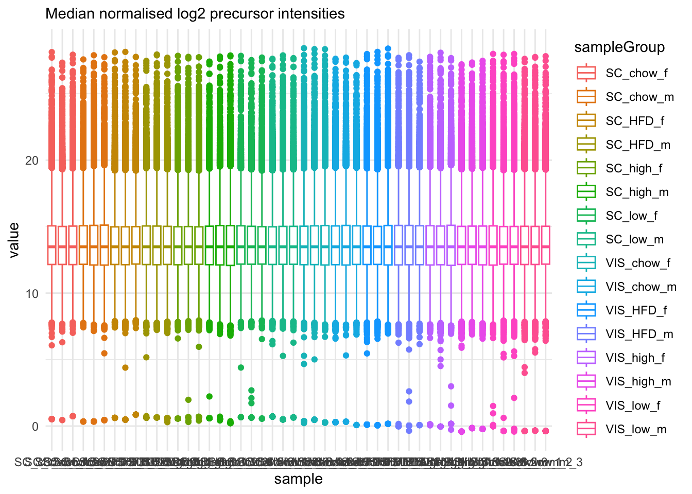
protDens <- qf[, , "proteins"] |>
longForm(colvars = colnames(colData(qf))) |>
data.frame() |>
filter(!is.na(value)) |>
ggplot() +
aes(x = value,
colour = sampleGroup,
group = colname) +
geom_density() +
theme_minimal() +
labs(subtitle = "log2 protein intensities (median normalised precursors)")
protDens
protBox <- qf[, , "proteins"] |>
longForm(colvars = colnames(colData(qf))) |>
data.frame() |>
filter(!is.na(value)) |>
ggplot() +
aes(x = sampleId,
y = value,
colour = sampleGroup,
group = colname) +
xlab("sample") +
geom_boxplot() +
theme_minimal() +
labs(subtitle = "log2 protein intensities (median normalised precursors)")
protBox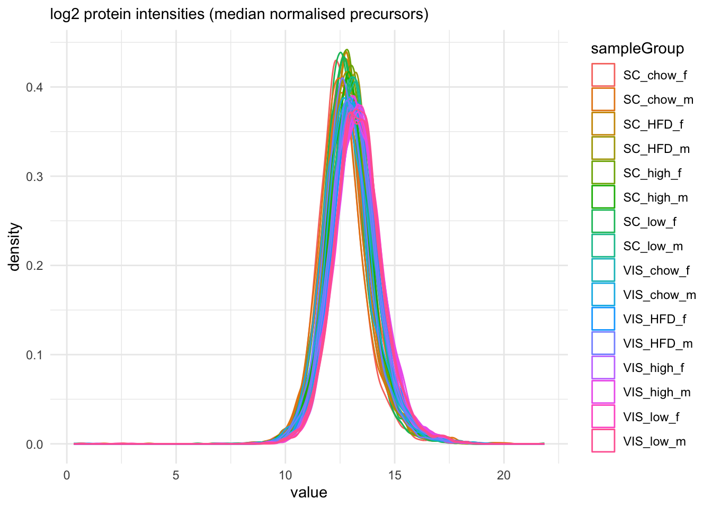
5.2 Charge state
qf[, , "precursors_norm"] |>
longForm(colvars = colnames(colData(qf)), rowvars = "FG_Charge") |>
as.data.frame() |>
filter(!is.na(value)) |>
filter(FG_Charge<=4) |>
ggplot(aes(x = sampleId)) +
geom_bar(aes(fill = factor(FG_Charge, levels = 4:1)),
colour = "black") +
labs(title = "Peptide types per sample",
x = "Sample",
fill = "Charge state") +
theme_bw()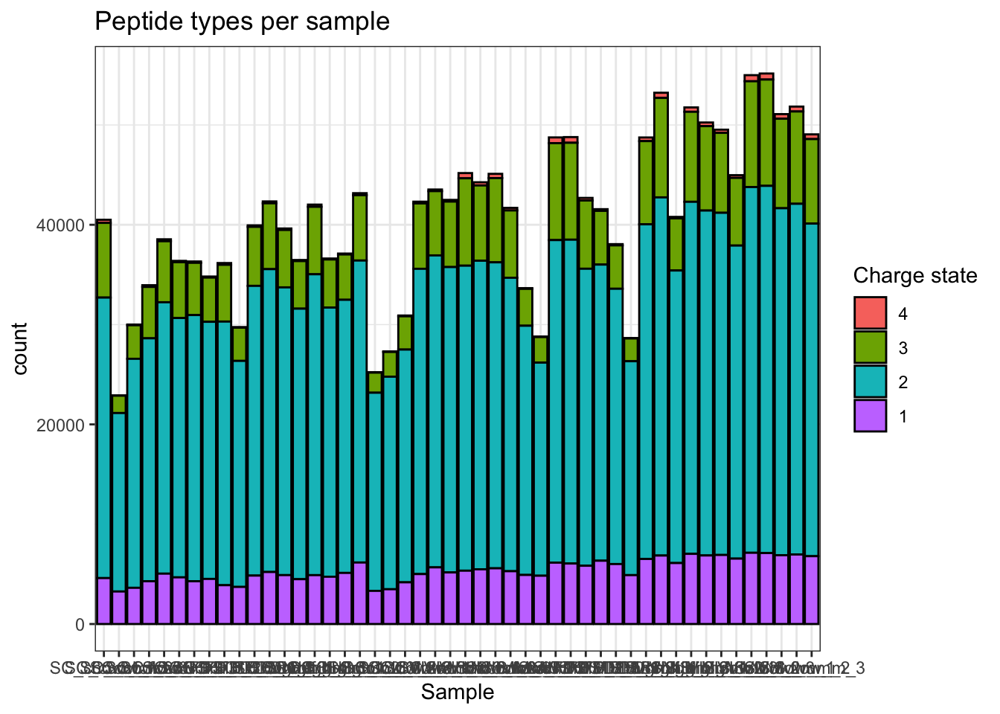
5.3 Identifications per sample
qf[,,"precursors_norm"] |>
longForm(colvars = colnames(colData(qf)),
rowvars= c("EG_PrecursorId",
"PG_ProteinGroups")) |>
data.frame() |>
filter(!is.na(value)) |>
group_by(sampleGroup, sampleId) |>
summarise(Precursors = length(unique(EG_PrecursorId)),
`Protein Groups` = length(unique(PG_ProteinGroups))) |>
pivot_longer(-(1:2),
names_to = "Feature",
values_to = "IDs") |>
ggplot(aes(x = sampleId, y = IDs, fill = sampleGroup)) +
geom_col() +
#scale_fill_observable() +
facet_wrap(~Feature,
scales = "free_y") +
labs(title = "Precursor and protein group identificiations per sample",
x = "Sample",
y = "Identifications") +
theme_bw() +
theme(axis.text.x = element_text(angle = 90))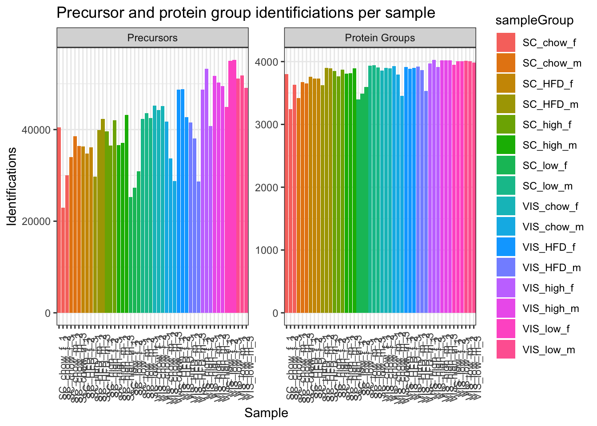
# Data Modeling (Robust Regression){#sec-modelling}5.4 Dimensionality reduction plot
A common approach for data exploration is to perform dimension reduction, such as Multi Dimensional Scaling (MDS). We will first extract the set to explore along the sample annotations (used for plot colouring).
protMDS <- getWithColData(qf, "proteins") |>
as("SingleCellExperiment") |>
runMDS(exprs_values = 1) |>
plotMDS(colour_by = "sampleGroup") +
labs(title = "Median normalisation")
protMDS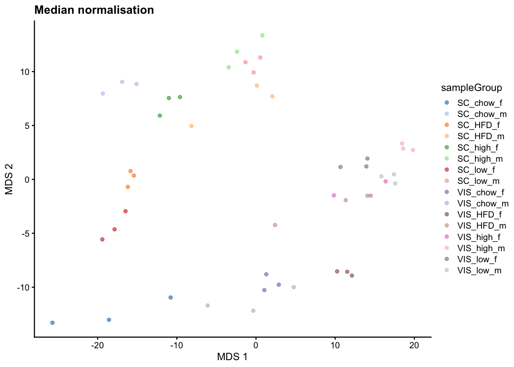
5.5 Correlation matrix
corMat <- qf[["proteins"]] |>
assay() |>
cor(method = "spearman", use = "pairwise.complete.obs")
colnames(corMat) <- qf$sampleId
rownames(corMat) <- qf$sampleId
corMat |>
ggcorrplot::ggcorrplot() +
scale_fill_viridis_c() +
labs(title = "Correlation matrix (median normalised)",
fill = "Correlation") +
theme(axis.text.x = element_text(angle = 90))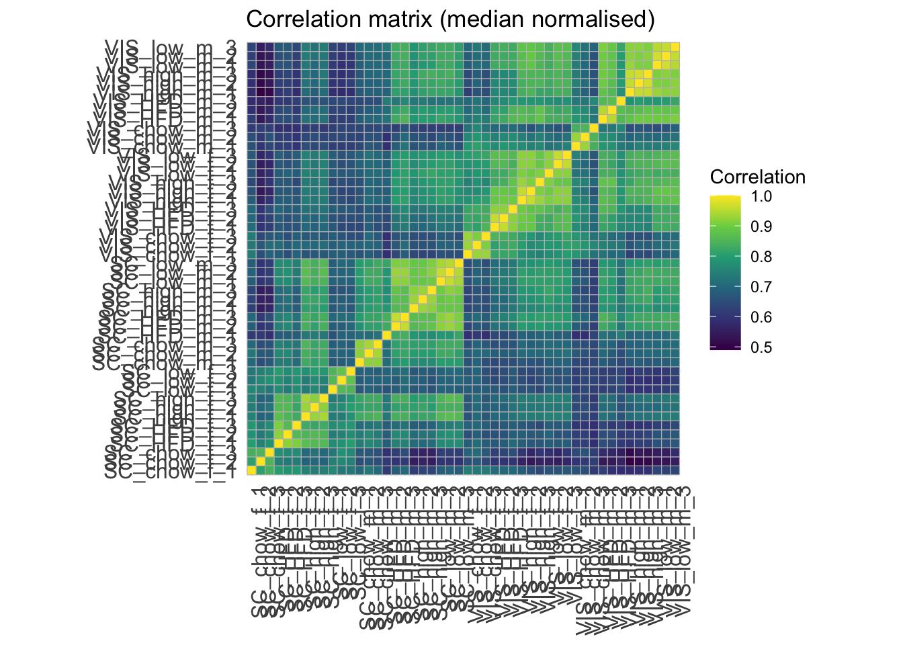
5.6 Issues
gridExtra::grid.arrange(precursorDens + theme(legend.position = "none"), protDens + theme(legend.position = "none"), nrow = 2)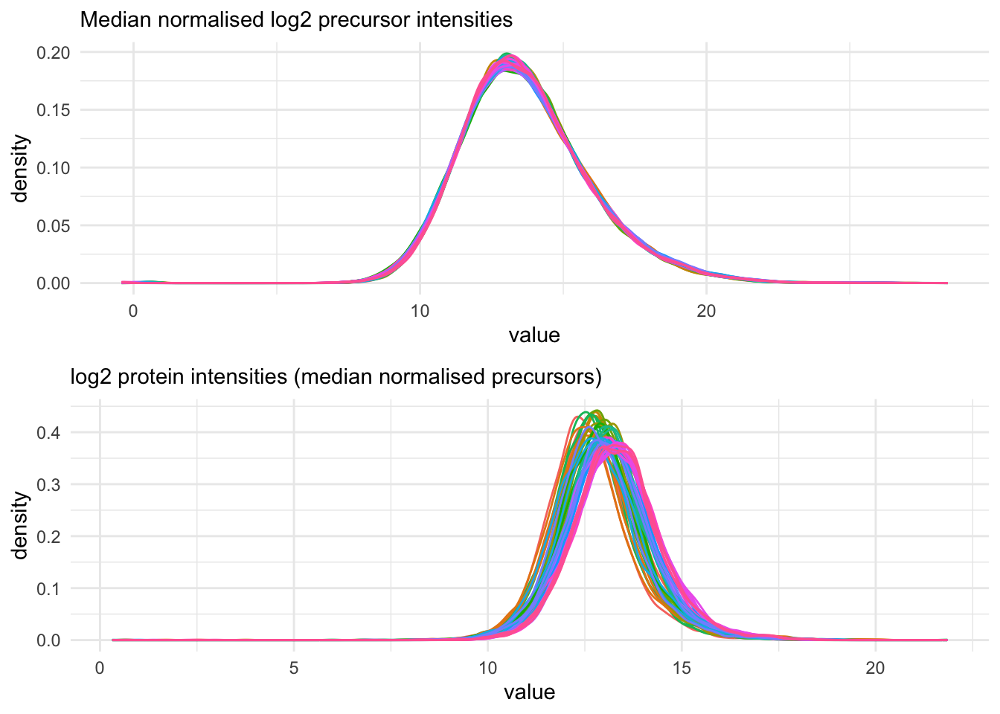
Marginal distribution of the precursors seems to be fine. But at the protein level the data does not seem to be normalised.
However, there were large differences in number of identifications across samples (see QC plots above). So there might be large differences between the samples w.r.t. the proteome composition. This seems to have a major impact on the protein summaries.
If we look to the marginal distribution of the common precursors we see similar differences as upon summarisation.
precursorsCommon <- assay(qf[, , "precursors_log"]) |> na.exclude() |> rownames()
precursorCommonDens <- qf[precursorsCommon, , "precursors_norm"] |>
longForm(colvars = colnames(colData(qf))) |>
data.frame() |>
filter(!is.na(value)) |>
ggplot() +
aes(x = value,
colour = sampleGroup,
group = colname) +
geom_density() +
theme_minimal() +
labs(subtitle = "Median normalised log2 precursor intensities (common)")
precursorCommonDens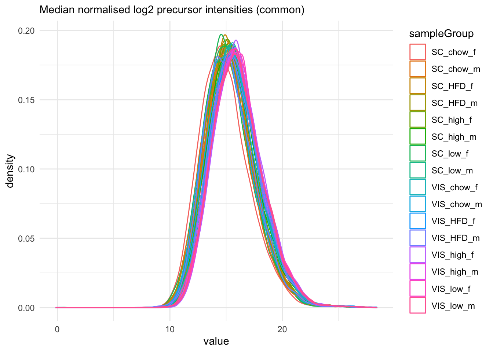
5.6.1 Median of ratio’s normalisation
We will try to migitate this using median of ratio’s normalisation.
This normalisation method
- First calculates a reference sample by calculating the geometric mean of the observed intensities for each precursor (rowwise)
- It then calculates the log2 fold change for each precursor in a sample w.r.t. the reference sample
- A sample based normalisation factor is then obtained by using the median log2 fold change per sample (column median)
This accounts for differences in composition between libraries.
qf <- sweep( #4. Subtract log2 norm factor column-by-column (MARGIN = 2)
qf,
MARGIN = 2,
STATS = nf_log_medrat(qf,"precursors_log"),
i = "precursors_log",
name = "precursors_norm_mr"
) (qf <- aggregateFeatures(
qf, i = "precursors_norm_mr",
name = "proteins_mr",
fcol = "PG_ProteinGroups",
fun = function(X) iq::maxLFQ(X)$estimate
))An instance of class QFeatures (type: bulk) with 54 sets:
[1] 153_SC_FP_fchow_1: SummarizedExperiment with 41333 rows and 1 columns
[2] 153_SC_FP_fchow_2: SummarizedExperiment with 23168 rows and 1 columns
[3] 153_SC_FP_fchow_3: SummarizedExperiment with 30416 rows and 1 columns
...
[52] proteins: SummarizedExperiment with 4182 rows and 48 columns
[53] precursors_norm_mr: SummarizedExperiment with 65210 rows and 48 columns
[54] proteins_mr: SummarizedExperiment with 4182 rows and 48 columns We will now assess the impact of the normalisation.
precursorDensMr <- qf[, , "precursors_norm_mr"] |>
longForm(colvars = colnames(colData(qf))) |>
data.frame() |>
filter(!is.na(value)) |>
ggplot() +
aes(x = value,
colour = sampleGroup,
group = colname) +
geom_density() +
theme_minimal() +
labs(subtitle = "Median of Ratio's normalised log2 precursor intensities")
precursorDensMr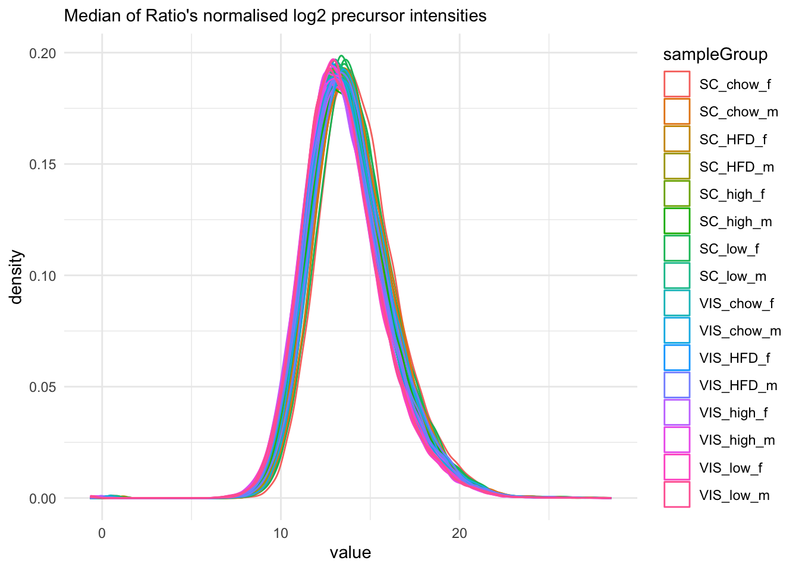
Precursors do not seem to be normalised. Perhaps this is also due to the composition. Lets take a look at the marginal distribution of the intensities for the common precursors.
precursorCommonDensMr <- qf[precursorsCommon, , "precursors_norm_mr"] |>
longForm(colvars = colnames(colData(qf))) |>
data.frame() |>
filter(!is.na(value)) |>
ggplot() +
aes(x = value,
colour = sampleGroup,
group = colname) +
geom_density() +
theme_minimal() +
labs(subtitle = "Median of Ratio's normalised log2 precursor intensities (common)")
precursorCommonDensMr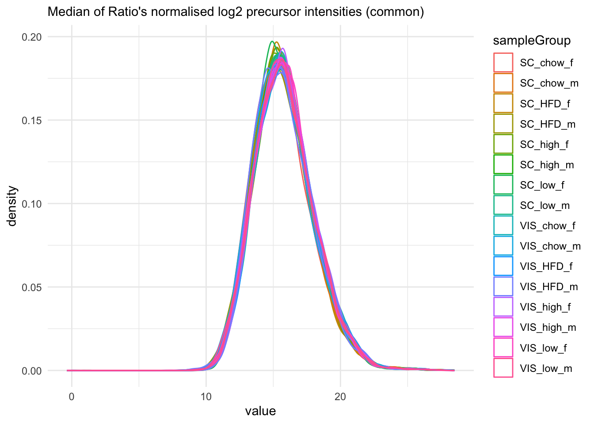
If we consider the common precursors, the normalisation is fine. So the differences we see between the marginal distribution of the intensities between the different runs is due to differences in the identified precursors.
We now look to the marginal distribution of the protein summaries upon median of ratio normalisation.
protDensMr <- qf[, , "proteins_mr"] |>
longForm(colvars = colnames(colData(qf))) |>
data.frame() |>
filter(!is.na(value)) |>
ggplot() +
aes(x = value,
colour = sampleGroup,
group = colname) +
geom_density() +
theme_minimal() +
labs(subtitle = "log2 protein intensities (median of ratio's normalised precursors)")
protDensMr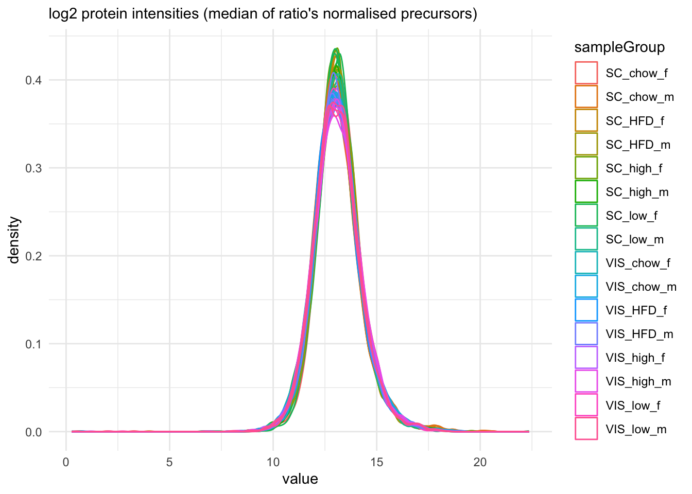
protBoxMr <- qf[, , "proteins_mr"] |>
longForm(colvars = colnames(colData(qf))) |>
data.frame() |>
filter(!is.na(value)) |>
ggplot() +
aes(x=sampleId,
y = value,
colour = sampleGroup,
group = colname) +
geom_boxplot() +
theme_minimal() +
labs(subtitle = "log2 protein intensities (median of ratio's normalised precursors)")
protBoxMr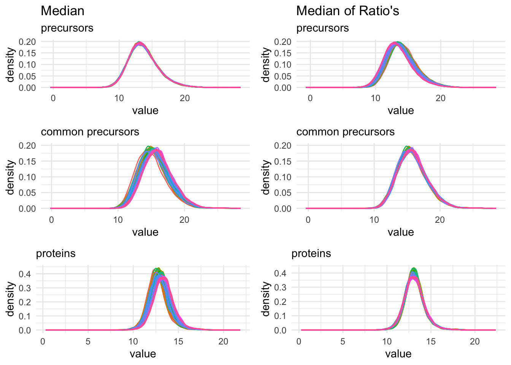
protMDSMr <- getWithColData(qf, "proteins_mr") |>
as("SingleCellExperiment") |>
runMDS(exprs_values = 1) |>
plotMDS(colour_by = "sampleGroup") +
labs(title = "Median of ratio's normalisation")
protMDSMr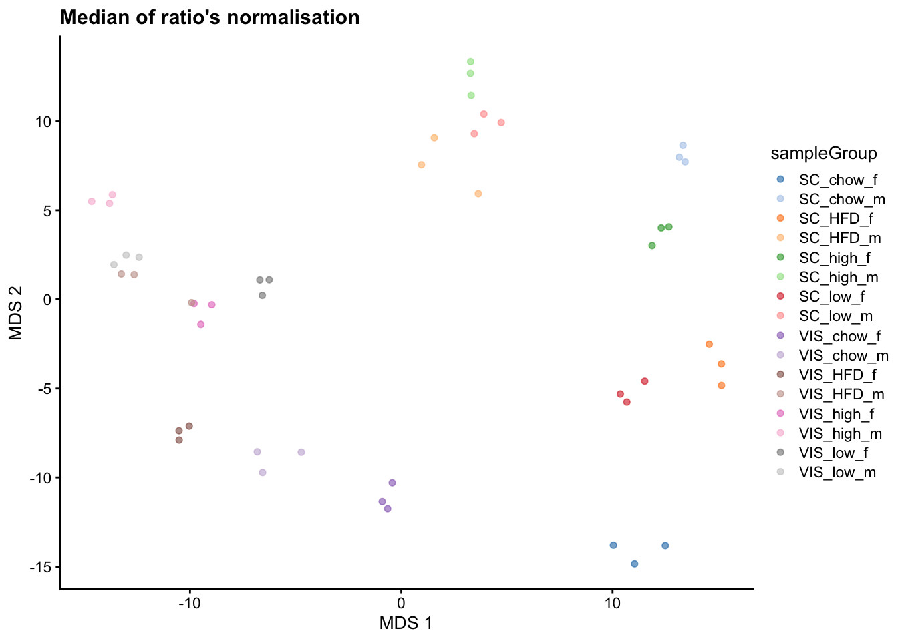
5.6.2 Internal normalisation Spectronaut
qf <- sweep(
qf,
MARGIN = 1:2,
STATS = get_searchengine_nf(qf, "precursors_log", "EG_NormalizationFactor"),
i = "precursors_log",
name = "precursors_norm_sn"
) (qf <- aggregateFeatures(
qf, i = "precursors_norm_sn",
name = "proteins_sn",
fcol = "PG_ProteinGroups",
fun = function(X) iq::maxLFQ(X)$estimate
))An instance of class QFeatures (type: bulk) with 56 sets:
[1] 153_SC_FP_fchow_1: SummarizedExperiment with 41333 rows and 1 columns
[2] 153_SC_FP_fchow_2: SummarizedExperiment with 23168 rows and 1 columns
[3] 153_SC_FP_fchow_3: SummarizedExperiment with 30416 rows and 1 columns
...
[54] proteins_mr: SummarizedExperiment with 4182 rows and 48 columns
[55] precursors_norm_sn: SummarizedExperiment with 65210 rows and 48 columns
[56] proteins_sn: SummarizedExperiment with 4182 rows and 48 columns We will now assess the impact of the normalisation.
precursorDensSn <- qf[, , "precursors_norm_sn"] |>
longForm(colvars = colnames(colData(qf))) |>
data.frame() |>
filter(!is.na(value)) |>
ggplot() +
aes(x = value,
colour = sampleGroup,
group = colname) +
geom_density() +
theme_minimal() +
labs(subtitle = "Spectronaut normalised log2 precursor intensities")
precursorDensSn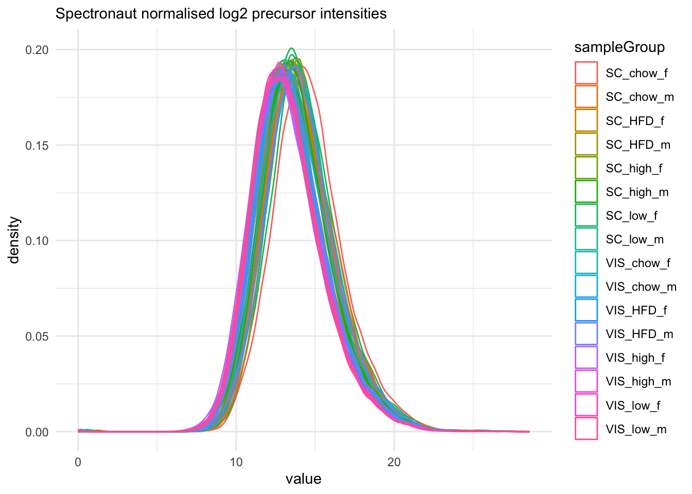
Precursors do not seem to be normalised. Perhaps this is also due to the composition. Lets take a look at the marginal distribution of the intensities for the common precursors.
precursorCommonDensSn <- qf[precursorsCommon, , "precursors_norm_sn"] |>
longForm(colvars = colnames(colData(qf))) |>
data.frame() |>
filter(!is.na(value)) |>
ggplot() +
aes(x = value,
colour = sampleGroup,
group = colname) +
geom_density() +
theme_minimal() +
labs(subtitle = "Spectronaut normalised log2 precursor intensities (common)")
precursorCommonDensSn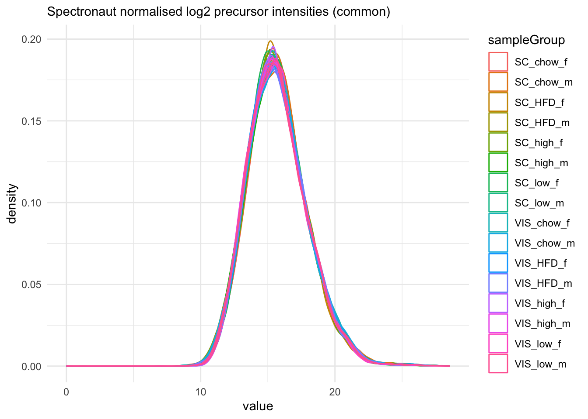
If we consider the common precursors, the normalisation seems fine. So the differences we see between the marginal distribution of the intensities between the different runs is due to differences in the identified precursors.
We now look to the marginal distribution of the protein summaries upon Spectronaut normalisation.
protDensSn <- qf[, , "proteins_sn"] |>
longForm(colvars = colnames(colData(qf))) |>
data.frame() |>
filter(!is.na(value)) |>
ggplot() +
aes(x = value,
colour = sampleGroup,
group = colname) +
geom_density() +
theme_minimal() +
labs(subtitle = "log2 protein intensities (Spectronaut normalised precursors)")
protDensSn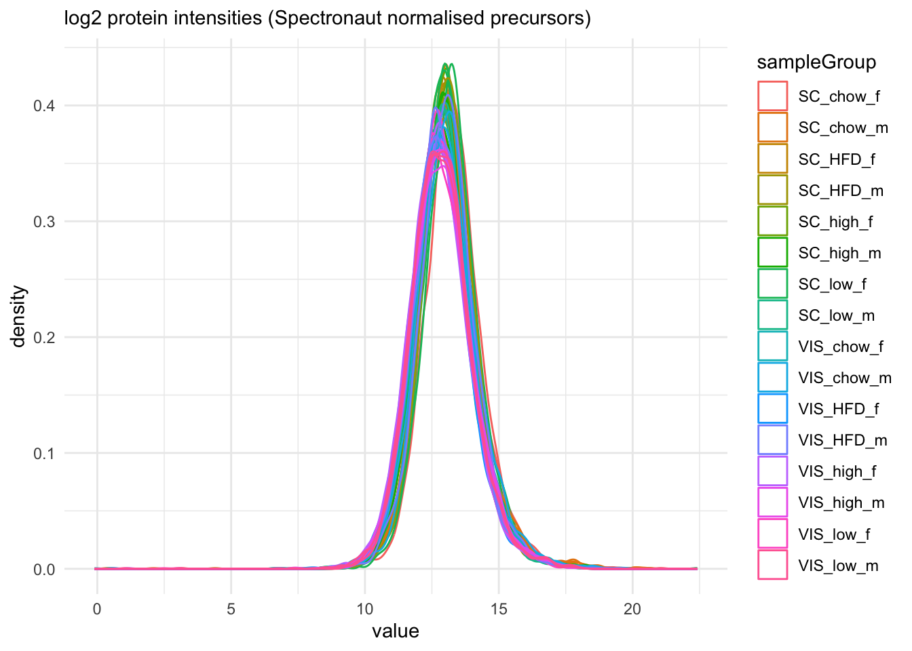
protBoxSn <- qf[, , "proteins_sn"] |>
longForm(colvars = colnames(colData(qf))) |>
data.frame() |>
filter(!is.na(value)) |>
ggplot() +
aes(x=sampleId,
y = value,
colour = sampleGroup,
group = colname) +
geom_boxplot() +
theme_minimal() +
labs(subtitle = "log2 protein intensities (Spectronaut normalised precursors)")
protBoxSn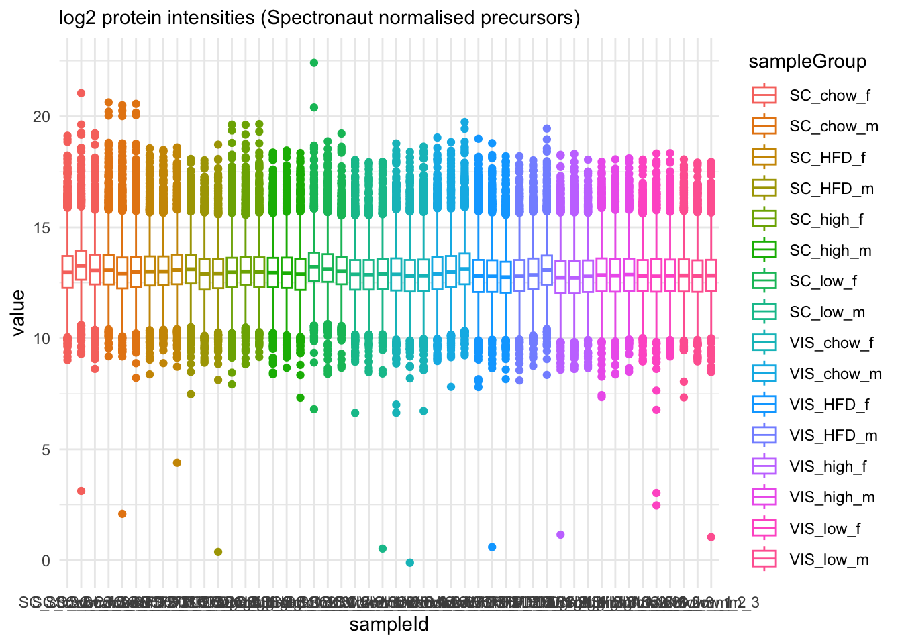
Normalisation is better than conventional median normalisation, however, median of ratio seems preferable.
protMDSSn <- getWithColData(qf, "proteins_sn") |>
as("SingleCellExperiment") |>
runMDS(exprs_values = 1) |>
plotMDS(colour_by = "sampleGroup") +
labs(title = "Spectronaut normalisation")
protMDSSn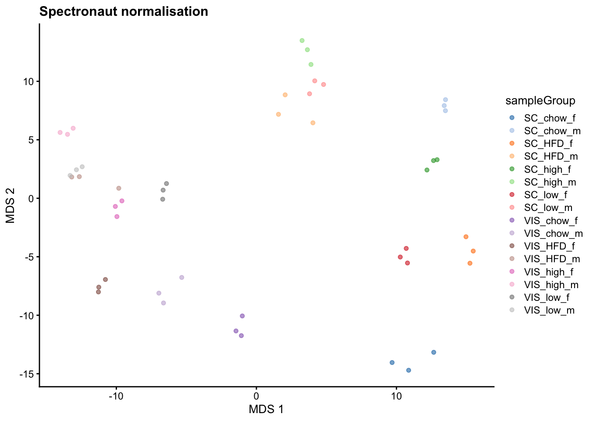
5.6.3 Overview
gridExtra::grid.arrange(precursorDens + theme(legend.position = "none") + labs(title = "Median", subtitle ="precursors"),
precursorDensMr + theme(legend.position = "none") + labs(title = "Median of Ratio's", subtitle ="precursors"),
precursorDensSn + theme(legend.position = "none") + labs(title = "Spectronaut", subtitle ="precursors"),
precursorCommonDens + theme(legend.position = "none") + labs(subtitle ="common precursors"),
precursorCommonDensMr + theme(legend.position = "none") + labs(subtitle ="common precursors"),
precursorCommonDensSn + theme(legend.position = "none") + labs(subtitle ="common precursors"),
protDens + theme(legend.position = "none") + labs(subtitle ="proteins"),
protDensMr + theme(legend.position = "none") + labs(subtitle ="proteins"),
protDensSn + theme(legend.position = "none") + labs(subtitle ="proteins"),
ncol = 3) 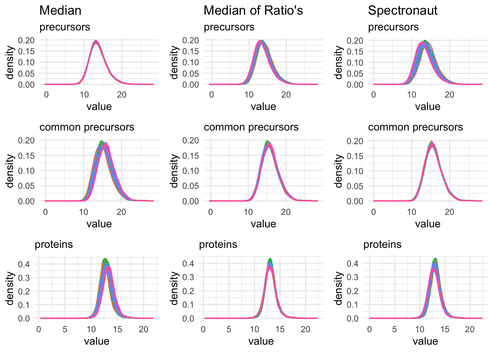
gridExtra::grid.arrange(protBox + theme(legend.position = "none") + labs(title = "Median", subtitle ="proteins"),
protBoxMr + theme(legend.position = "none") + labs(title = "Median of Ratio's", subtitle ="precursors"),
protBoxSn + theme(legend.position = "none") + labs(title = "Spectronaut", subtitle ="precursors"),
ncol = 3
)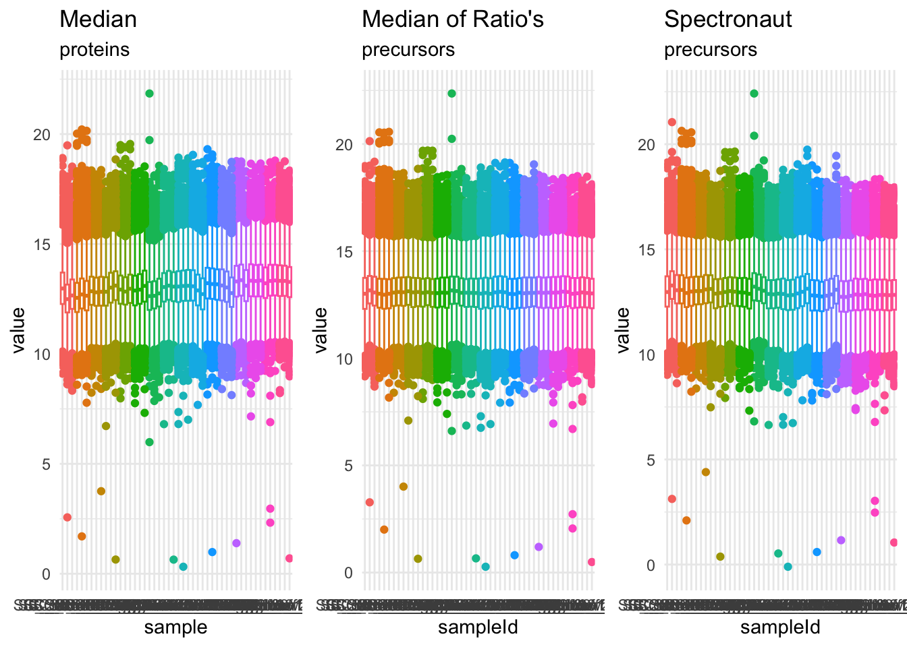
Median of Ratio’s seems to result in protein summaries for which the marginal protein intensity distributions are most comparable.
ggpubr::ggarrange(protMDS, protMDSMr, protMDSSn, common.legend = TRUE, legend="bottom", ncol = 3)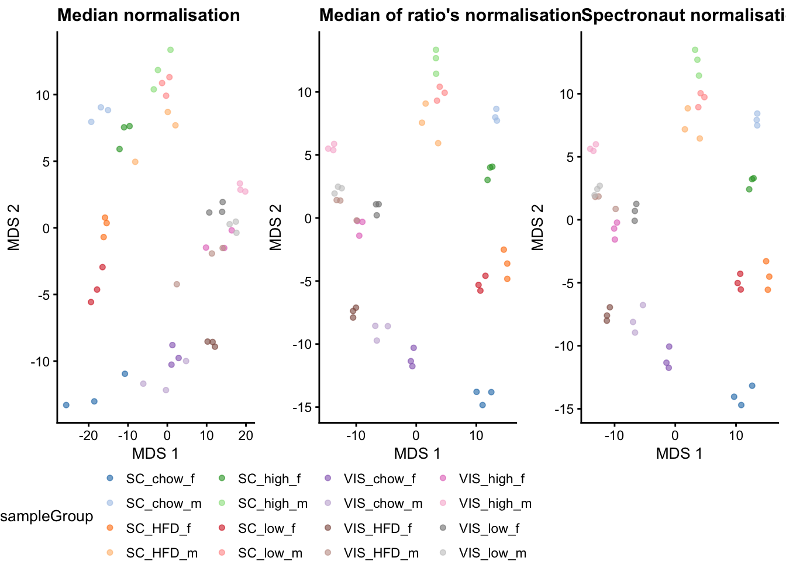
It shows the main sources of variability between samples upon summarisation following median of ratio’s or Spectronaut normalisation are much more driven by the biology!
It also shows that normalisation for large experiments is challenging.
References
Aldehoff, Alix Sarah, Isabel Karkossa, Hannes Broghammer, Sandra Krupka, Jan Weiner, Charlotte Goerdeler, Rasha Nuwayhid, et al. 2025. “Advanced Proteomics Approaches Hold Potential for the Risk Assessment of Metabolism-Disrupting Chemicals as Omics-Based NAM: A Case Study Using the Phthalate Substitute DINCH.” Environmental Science & Technology 59 (31): 16193–216. https://doi.org/10.1021/acs.est.5c01206.